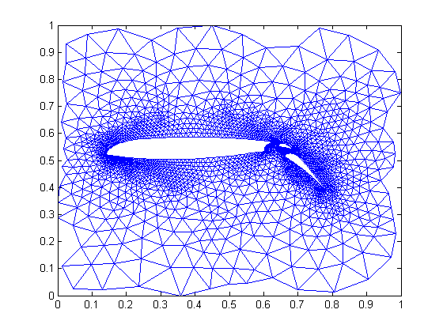
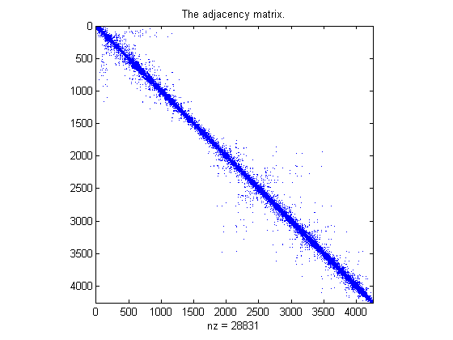
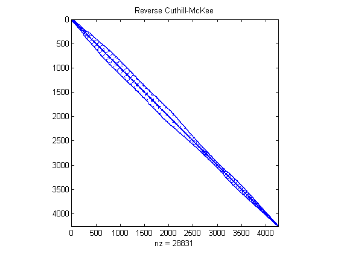
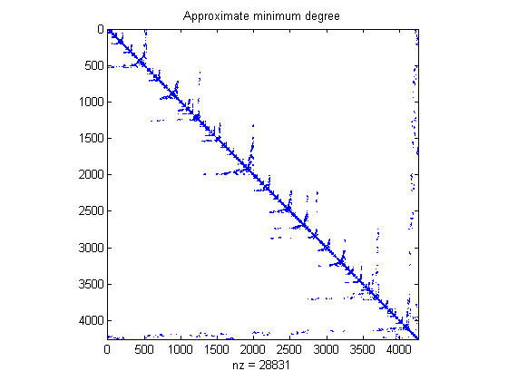

Graphical Representation of Sparse Matrices
This demo shows the finite element mesh for a NASA airfoil, including two trailing flaps.
Contents
The data is stored in the file AIRFOIL.MAT. It holds 4253 pairs of (x,y) coordinates of the mesh points. It also holds an array of 12,289 pairs of indices, (i,j), specifying connections between the mesh points.
load airfoil
The Finite Element Mesh
First, scale x and y by 2^(-32) to bring them into the range [0,1]. Then form the sparse adjacency matrix and make it positive definite.
% Scaling x and y x = pow2(x,-32); y = pow2(y,-32); % Forming the sparse adjacency matrix and making it positive definite n = max(max(i),max(j)); A = sparse(i,j,-1,n,n); A = A + A'; d = abs(sum(A)) + 1; A = A + diag(sparse(d)); % Plotting the finite element mesh gplot(A,[x y])
Visualizing the Sparsity Pattern
SPY is used to visualize sparsity pattern. SPY(A) plots the sparsity pattern of the matrix A.
spy(A)
title('The adjacency matrix.')
 Symmetric Reordering - Reverse Cuthill-McKee
SYMRCM uses the Reverse Cuthill-McKee technique for reordering the adjacency matrix. r = SYMRCM(A) returns a permutation vector r such that A(r,r) tends to have its diagonal elements closer to the diagonal than A. This is a good preordering for LU or Cholesky factorization of matrices that come from "long, skinny" problems. It works for both symmetric and asymmetric A.
r = symrcm(A);
spy(A(r,r))
title('Reverse Cuthill-McKee')
 Symmetric Reordering - COLPERM
Use j = COLPERM(A) to return a permutation vector that reorders the columns of the sparse matrix A in non-decreasing order of non-zero count. This is sometimes useful as a preordering for LU factorization: lu(A(:,j)).
j = colperm(A);
spy(A(j,j))
title('Column count reordering')

Symmetric Reordering - SYMAMD
SYMAMD gives a symmetric approximate minimum degree permutation. p = SYMAMD(S), for a symmetric positive definite matrix A, returns the permutation vector p such that S(p,p) tends to have a sparser Cholesky factor than S. Sometimes SYMAMD works well for symmetric indefinite matrices too.
m = symamd(A);
spy(A(m,m))
title('Approximate minimum degree')
